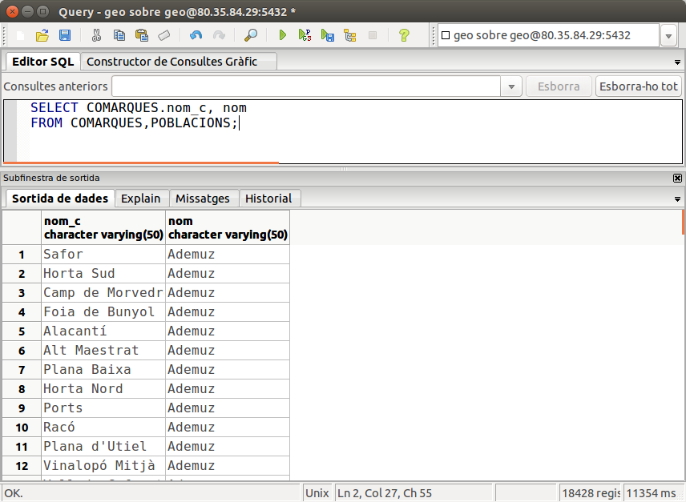
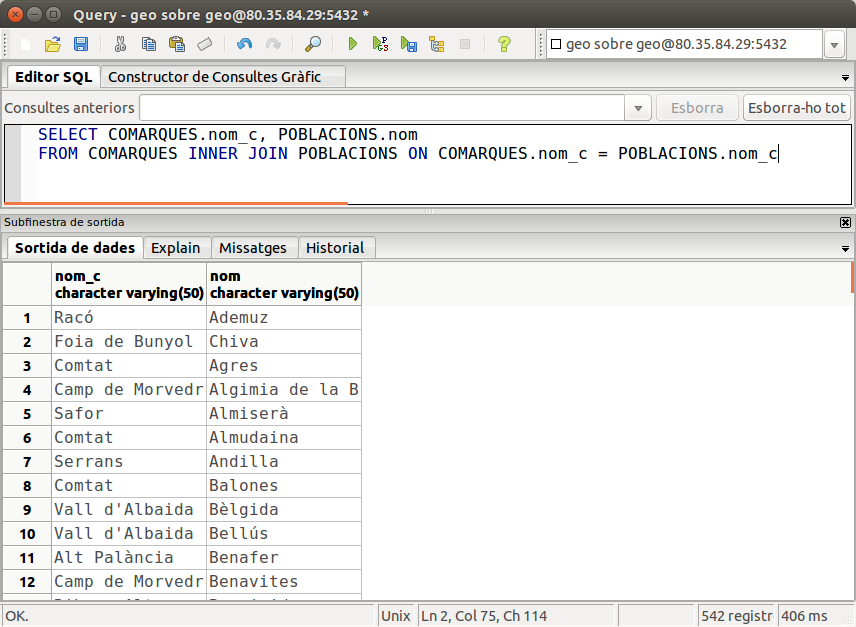
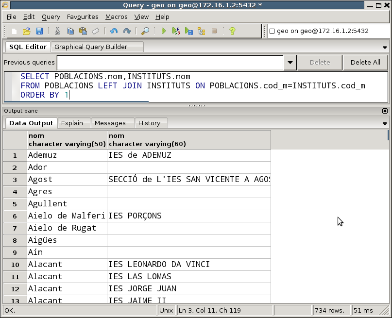
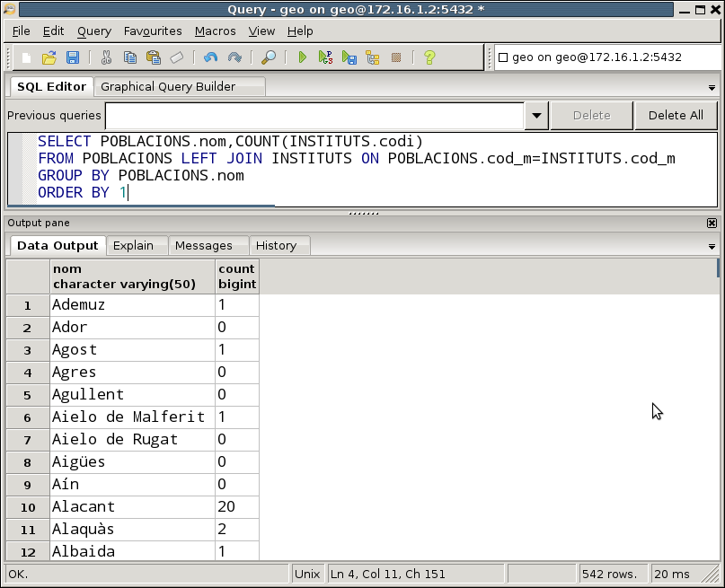
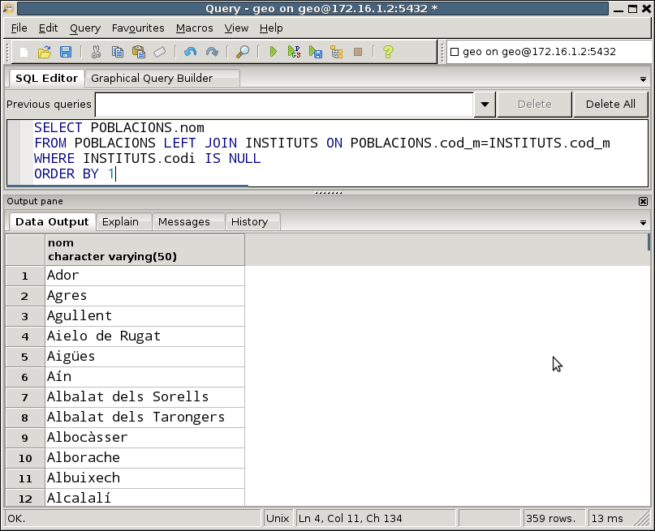

2. Combinaciones de tablas
Vimos en la sentencia básica que en la cláusula FROM poníamos la tabla o tablas de dónde se tomarían los datos, pero en todos los ejemplos posteriores sólo entraba en juego una única mesa.
Es el momento de estudiar las diferentes posibilidades que tendremos cuando pongamos más de una mesa.
-
La primera es el producto cartesiano , que nunca utilizaremos, pero debemos saber en qué consiste para poder evitarlo.
-
La segunda será la más utilizada, la combinación (que a veces llamaremos reunión).
-
La tercera es una variante de la anterior, la combinación externa , muy útil en algunos casos.
2.1 Producto cartesiano
La manera más sencilla es poner las tablas separadas por comas, pero seguramente el resultado no es lo que esperábamos.
Por ejemplo podemos hacer la siguiente sentencia:
SELECT COMARCAS.nombre_c, nombre
FROM COMARCAS, POBLACIONES;
Nota
Observe que hemos puesto el nombre de la tabla delante del campo nombre_c , porque las dos tablas tienen un campo con ese nombre. Esta operación se llama calificación. Si no calificamos con el nombre de la tabla delante, allí habría ambigüedad, no sabría a qué campo se refiere, si el de una mesa o el por otro. Cuando los nombres de los campos son diferentes y por tanto no coinciden en las dos tablas, no es necesario calificar el campo (como por ejemplo con el campo nombre)
Si ejecutamos la sentencia, veremos que tendremos un número de filas inesperadamente alt, 18.428 filas !!! Y si analizamos las filas veremos el porqué: se ha combinado cada comarca con todos los pueblos (sean de la comarca o no).

Esta operación se llama PRODUCTO CARTESIANO (cross join), y se caracteriza en que cada una de las filas de una tabla se combina con todas las filas de la otra mesa. El número de filas resultante será, pues, el resultado de multiplicar el número de filas de una tabla por el número de filas de otra tabla (en nuestro caso 34 x 542 = 18428).
Raramente querremos realizar un producto cartesiano. Lo normal será combinar una poquito mejor las tablas. En nuestro ejemplo seguramente nos interesará mucho más combinar cada comarca con sus poblaciones.
2.2 Combinación interna
Combinación de dos tablas: Sintaxis
Normalmente el producto cartesiano no nos va a interesar. Más bien querremos combinar las tablas de forma que dos campos, un campo de cada mesa, coincidan. Y el más habitual, si tenemos la Base de Datos bien diseñada, será que los campos coincidentes sean una clave externa con la clave principal a la que apunta. Así, en el ejemplo que utilizábamos en el punto anterior, lo que sí que nos será útil es combinar cada comarca con sus poblaciones. Y justamente tenemos un campo en la tabla POBLACIONES, nombre_c , que es clave externa y apunta a la clave principal de COMARCAS.
Esta operación la llamaremos COMBINACIÓN INTERNA o sencillamente COMBINACIÓN , ya veces también se llama REUNIÓN. Su sintaxis es la siguiente:
SELECT ...
FROM mesa1 INNER JOIN mesa2 DONDE _condición_
La condición de la reunión consistirá en comparar un campo de cada mesa. Ambos campos tendrán que ser del mismo tipo, pero no será necesario que tengan el mismo nombre. Las filas que saldrán al resultado serán las que cumplan la condición.
Aunque los operadores que se pueden utilizar son todos los de comparación, en la práctica SIEMPRE utilizaremos el de igualar. Por tanto podemos refinar mejor la combinación de 2 tablas
SELECT ...
FROM mesa1 INNER JOIN mesa2 DONDE mesa1.campo1 = mesa2.campo2
El ejemplo de las comarcas y sus poblaciones quedará así
SELECT COMARCAS.nombre_c, POBLACIONES.nombre
FROM COMARCAS INNER JOIN POBLACIONES DONDE COMARCAS.nombre_c = POBLACIONES.nombre_c
Y éste sería el resultado

que como vemos vuelve 542 filas (tantas como pueblos)
Alternativamente, podríamos poner la misma reunión de otra forma:
SELECT COMARCAS.nombre_c, POBLACIONES.nombre
FROM COMARCAS, POBLACIONES
WHERE COMARCAS.nombre_c = POBLACIONES.nombre_c
donde estrictamente lo que estamos haciendo es, del producto cartesiano de las 2 tablas, seleccionar únicamente cuando coincide el nombre_c (es decir la comarca con sus poblaciones), y por tanto el resultado sería el mismo. Quizá fuera más eficiente utilizar el primer modo, pero a veces la comodidad nos hará utilizar la segunda (sobre todo cuando se vayan a combinar muchas tablas).
Las dos formas de poner la conbinación de dos tablas son las más habituales, y que funcionan en cualquier Sistema Gestor de Bases de Datos.
Sin embargo en PostgreSQL (y en otros SGBD como Oracle) hay más formas de hacer una combinación. No las veremos tan a fondo porque las anteriores nos bastan y sobran:
-
INNER JOIN con USING : En caso de que los campos a reunir de las dos tablas se digan exactamente igual, podemos sustituir la condición puesta en ON por la expresión USING , con el campo de la reunión entre paréntesis
SELECT COMARCAS.nombre_c, POBLACIONES.nombre
FROM COMARCAS INNER JOIN POBLACIONES USING (nombre_c) -
NATURAL JOIN : También para el caso anterior, en el que el campo en las dos tablas se llama igual, podemos hacerlo de forma aún más abreviada. Hará una reunión, igualando todos los campos que se llamen igual de las dos tablas. Debemos tener cuidado, por si hay algún otro campo en las dos tablas que se diga igual.
SELECT COMARCAS.nombre_c, POBLACIONES.nombre
FROM COMARCAS NATURAL JOIN POBLACIONES
Ejemplos
1) Sacar los nombres de las Poblaciones y los nombres de los Institutos que hay en ellas.
Deberemos combinar las tablas por la clave externa de INSTITUTOS a POBLACIONES (es a decir la que apunta de cod_m en INSTITUTOS hasta la clave principal de COMARCAS, que es justamente cod_m).
SELECT POBLACIONES.nombre,INSTITUTOS.nombre
FROM POBLACIONES INNER JOIN INSTITUTOS DONDE POBLACIONES.cod_m=INSTITUTS.cod_m;
Utilizando la otra sintaxis, que ponemos la condición en el WHERE , nos quedaría:
SELECT POBLACIONES.nombre,INSTITUTOS.nombre
FROM POBLACIONES, INSTITUTOS
WHERE POBLACIONS.cod_m=INSTITUTOS.cod_m;
Como en este caso el campo que debemos igualar tiene el mismo nombre en las dos tablas, utilizando la sintaxis del USING nos quedará más fácil:
SELECT POBLACIONES.nombre,INSTITUTOS.nombre
FROM POBLACIONES INNER JOIN INSTITUTOS USING(cod_m);
En cambio, debemos ir con mucho cuidado con la sintaxis del NATURAL JOIN , porque intentará igualar todos los campos que se llaman igual, y en este caso tenemos dos campos coincidentes: cod_m y nombre. cod_m es lo que queremos, pero nombre nos fastidiará, y evidentemente no coincide nunca el nombre del Instituto y el de la población, y por tanto no volverá ninguna fila.
SELECT POBLACIONES.nombre,INSTITUTOS.nombre
FROM POBLACIONES NATURAL JOIN INSTITUTOS;
2) Sacar los nombres de las comarcas y la provincia, con el número de poblaciones que tiene cada comarca.
Ex_69 Sacar los pueblos donde tenemos clientes pero no tenemos vendedores. Debe ser mediante subconsultas (en plural). Ordene por código del pueblo.
SELECT COMARCAS.nombre_c, provincia, COUNT(cod_m) AS Quants
FROM COMARCAS INNER JOIN POBLACIONES DONDE COMARCAS.nombre_c=POBLACIONES.nombre_c
GROUP BY COMARQUES.nombre_c, provincia;
Tres o más tablas
Si tenemos más de 2 tablas, deberemos proceder de la misma manera, ya que si dejamos de combinar alguna mesa, tendremos el producto cartesiano. Como en la inmensa mayoría de casos, la reunión la haremos por las claves externas que tenemos definidas. Únicamente deberemos cuidar los paréntesis, para marcar primero una condición de combinación y después la otra. En un ejemplo lo veremos perfectamente ilustrado.
Intentamos sacar el nombre de una comarca y la provincia, el nombre de sus pueblos y el nombre de los institutos de esos pueblos. Nos hacen falta las tablas COMARCAS (para poder sacar el nombre de la comarca y provincia), POBLACIONES (para sacar el nombre de la población) e INSTITUTOS (para el nombre de éstos). Ordenaremos por nombre de comarca, y dentro de éste por población, para una mejor lectura del resultado
SELECT COMARCAS.nombre_c, provincia, POBLACIONES.nombre, INSTITUTOS.nombre
FROM (COMARCAS INNER JOIN POBLACIONES DONDE COMARCAS.nombre_c=POBLACIONES.nombre_c)
INNER JOIN INSTITUTOS DONDE POBLACIONES.cod_m=INSTITUTOS.cod_m
ORDER BY 1,3;
Podríamos poner la consulta de la forma alternativa, en la que las condiciones de reunión van en el WHERE. Obviamente estas condiciones deben ir unidas por el operador AND.
SELECT COMARCAS.nombre_c, provincia, POBLACIONES.nombre, INSTITUTOS.nombre
FROM COMARCAS, POBLACIONES, INSTITUTOS
WHERE COMARCAS.nombre_c=POBLACIONES.nombre_c AND POBLACIONES.cod_m=INSTITUTOS.cod_m
ORDER BY 1,3;
Vamos a plantear otro ejemplo. Se trata de sacar el nombre y la provincia de las comarcas, con el número de Institutos que existen en ellas. En principio podríamos pensar que las únicas tablas que nos hacen falta son COMARCAS (para sacar el nombre y provincia de la comarca) e INSTITUTOS (para poder contar los INSTITUTOS). Si intentamos hacer esta consulta, NO obtendremos el resultado deseado.
SELECT nombre_c, provincia, COUNT(código)
FROM COMARQUES , INSTITUTOS
GROUP BY nombre_c, provincia
Evidentemente habrá un producto cartesiano, ya que no hemos combinado las tablas, y nos saldrá para cada comarca 375 institutos, que es el número total de institutos, puesto que se ha combinado cada comarca con todos los institutos.
Pero entonces, ¿por qué campo combinamos? Si intentamos unir las claves principales, nombre_c con código (el código de Instituto) no pueden combinar bien por razones evidentes. Debemos fijarnos en el diseño de la Base de Datos. Observaremos que el problema es que no existe una clave externa entre INSTITUTOS y COMARCAS. Pero también nos da la solución: deberemos poner también la mesa POBLACIONES aunque no queramos visualizar ningún campo de esta tabla, ya que si están relacionadas las tablas INSTITUTOS y COMARCAS es a través de esta tabla. Por tanto la consulta correcta será:
SELECT COMARCAS.nombre_c, provincia, COUNT(código)
FROM (COMARCAS INNER JOIN POBLACIONES DONDE COMARCAS.nombre_c=POBLACIONES.nombre_c)
INNER JOIN INSTITUTOS DONDE POBLACIONES.cod_m=INSTITUTOS.cod_m
GROUP BY COMARQUES.nombre_c, provincia
La forma alternativa parece más corta. Está claro que si son 3 tablas, habrán de haber 2 condiciones de combinación unidas por AND.
SELECT COMARCAS.nombre_c, provincia, COUNT(código)
FROM COMARCAS, POBLACIONES, INSTITUTOS
WHERE COMARCAS.nombre_c=POBLACIONES.nombre_c AND POBLACIONES.cod_m=INSTITUTOS.cod_m
GROUP BY COMARQUES.nombre_c, provincia;
De forma general, si tenemos n tablas en una consulta, nos harán falta n-1 condiciones de combinación unidas por AND. Por ejemplo, si en una consulta entran 5 mesas, para no tener ningún producto cartesiano nos harán falta 4 condiciones unidas por AND.
Una mesa más de una vez
Vamos a plantear otro ejemplo interesante: sacar el nombre de las poblaciones, con el nombre de la capital comarcal. Lamentablemente con los datos que tenemos en la Base de Datos de ejemplo no podremos probarlo, así que vamos a hacer una suposición, una Base de Datos ligeramente modificada para ilustrar este ejemplo.
Supongamos que nuestra mesa de POBLACIONES fuera ligeramente diferente, y que incorporará un nuevo campo con el código del municipio que es capital de comarca de la población:
POBLACIONES
(
cod_m numerico(5,0) CONSTRAINT cp_pobl PRIMARY KEY,
nombre character varying(50) NOT NULL,
población numérica(6,0),
extensión numérica(6,2),
altura numérico(4,0),
longitud character varying(50),
latitud character varying(50),
lengua character(1),
nombre_c character varying(50),
***cod_capital numerico(5,0) CONSTRAINT ce_capital REFERENCIAS POBLACIONES(cod_m)
)
Para poder sacar al mismo tiempo el nombre de las poblaciones y el nombre de la su capital de comarca no tenemos suficiente con poner la mesa POBLACIONES una vez: sólo sacaríamos el nombre de la población y nos quedaríamos con el código de municipio de la capital. La solución será reunirla con la mesa POBLACIONES, poniéndola una segunda vez para tener dos instancias de la mesa, una instancia para la población normal y otra para la capital. Pero cómo ¿distinguiremos entre las dos instancias? Pues poniendo un nombre en cada una. En general podemos poner un nombre en la sentencia en cualquier mesa que aparezca, poniendo este nombre a continuación de la mesa (opcionalmente podríamos poner AS en medio):
SELECT ...
FROM mesa T
En el resto de la consulta deberemos utilizar este nombre. El ejemplo quedará de la siguiente manera:
SELECT P1.nombre AS "Nombre población" , P2.nombre as "Nombre capital"
FROM POBLACIONES P1 INNER JOIN POBLACIONES P2 DONDE P1.cod_capital=P2.cod_m
o de la forma alternativa:
SELECT P1.nombre AS "Nombre población" , P2.nombre as "Nombre capital"
FROM POBLACIONES P1, POBLACIONES P2
WHERE P1.cod_capital=P2.cod_m
Nota
Recuerde que estas instrucciones no las podemos probar, porque no tenemos el campo cod_capital.
Clave externa formada por más de un campo
Por último vamos a considerar el caso de que la clave externa esté formada por más de un campo. Lo basaremos en el ejemplo de los Bancos , donde la mesa CUENTA CORRIENTE depende en identificación de SUCURSAL. Cómo la clave principal de SUCURSAL está formada por 2 campos, la clave externa de CUENTA CORRIENTE, que apunta a la primera también estará formada por 2 campos. Si queremos sacar el número de cuenta corriente, el nombre de la sucursal de dónde está la cuenta, y el saldo, nos harán falta ambas tablas. Ésta sería la manera de combinarlas:
SELECT C.n_ent , C.n_jugo , n_cc , S.nombre , C.saldo
FROM SUCURSAL S INNER JOIN CUENTA_CORRENT C DONDE S.n_ent=C.n_ent AND
S.n_jugo=C.n_jugo
o de la forma alternativa:
SELECT C.n_ent , C.n_jugo , n_cc , S.nombre , C.saldo
FROM SUCURSAL S, CUENTA_CORRIENTE C
WHERE S.n_ent=C.n_ent AND S.n_suc=C.n_suc
En ambos casos se ha optado por poner nombre a las tablas (S y C respectivamente) por comodidad, para que no quedara tan larga la consulta.
 Ejercicios
Ejercicios
Ex_51 Sacar el nombre de los clientes con el número de factura y la fecha (individuales, sin agrupar nada) que tiene cada cliente. Saca el resultado ordenado por cliente, y dentro de éste por fecha de la factura
Ex_52 Sacar el nombre del socio, con el código y la descripción de cada artículo que ha pedido. Ordena por nombre del socio y código del artículo.
Ex_53 Modificar lo anterior para que no se repitan los resultados.
Ex_54 Sacar el nombre de los clientes con la cantidad de facturas que tienen, ordenadas por este número de mayor a menor
Ex_55 Sacar el número de factura, fecha, código de cliente, total de la factura (con el alias IMPORTE) y total de la factura aplicando descuentos de artículo (con sobrenombre DESCUENTO_1), como en la consulta Ex_33 , pero sin el límite de las 10 líneas de factura. Ordena por número de factura.
Ex_56 Modificar lo anterior para aplicar también el descuento de la factura (con el sobrenombre DESCUENTO_2)
Ex_57 Sacar el código y nombre de aquellos vendedores que supervisan a alguien (consten como cabeza). Sacar también el número de supervisados de cada uno de estos supervisores.
Ex_58 Sacar el código y descripción de los artículos junto con el número de veces que se ha vendido, el total de unidades vendidas y la media de unidades vendidas por factura.
Ex_59 Sacar el código y la descripción de las categorías, con la cantidad de artículos vendidos de cada categoría, de aquellas categorías de las que se han vendido más de 100 unidades. Ordenar por este número de forma descendiente.
2.3 Combinación externa
En ocasiones nos interesará realizar una combinación diferente. Como casi siempre nos basaremos en un ejemplo. Cuando en un ejemplo del punto anterior sacamos los nombre de las poblaciones con el nombre de los institutos, no podían salir las poblaciones que carecen de institutos. Ahora nos plantearemos la posibilidad de sacar todas las poblaciones, incluso aquellas que no tienen institutos, pero de aquellas que sí que tengan sacar también el nombre de los institutos. Esta operación se llama COMBINACIÓN EXTERNA.
Sintaxi
Tendremos dos posibilidades: sacar todas las de la izquierda o sacar todas las de la izquierda de la derecha.
Para sacar TODAS las filas de la mesa de la izquierda, y aquellas que estén relacionadas de la de la derecha:
SELECT ...
FROM mesa1 LEFT [OUTER] JOIN mesa2 DONDE _condición_
Así sacaremos TODAS las filas de tabla1, y aquellas que estén relacionadas de mesa2.
Para hacerlo al revés, es decir, todas las filas de la mesa de la derecha y aquellas filas que estén relacionadas de la izquierda:
SELECT ...
FROM mesa1 RIGHT [OUTER] JOIN mesa2 DONDE _condición_
De esta manera sacaremos TODAS las filas de tabla2, y aquellas que estén relacionadas de tabla1.
En nuestro ejemplo:
SELECT POBLACIONES.nombre,INSTITUTOS.nombre
FROM POBLACIONES LEFT JOIN INSTITUTOS DONDE POBLACIONES.cod_m=INSTITUTS.cod_m
ORDER BY 1
donde hemos ordenado por el nombre de la población para una mejor lectura, y nos dará el siguiente resultado:

Podemos observar que nos saca incluso a los pueblos que no tienen institutos, y que en el campo nombre del instituto tienen el valor NULL.
Hagamos una variante interesante. Vamos a sacar a los pueblos con el número de institutos que tiene cada uno. Nos hará falta la mesa POBLACIONES para poder sacar el nombre de la población y la tabla INSTITUTOS para sacar el número de institutos, y agruparemos por el nombre de la población. Las dos tablas las debemos combinar (para evitar el producto cartesiano). Si hacemos una combinación normal (interna), los que no tienen institutos no entran. Pero si hacemos una combinación externa sí que entrarán.
Sólo nos queda contar por un campo que en el caso de quienes no tienen institutos tenga el valor nulo, es decir, por un campo de la tabla INSTITUTOS, y el que mejor se nos acopla es alguno que forma parte de la clave principal, ya que cómo no puede tomar un valor nulo en la tabla INSTITUTOS, la única posibilidad de que coja el valor nulo en la combinación externa es que la población no tenga instituto, y entonces en el momento de contar nos dará el valor 0.
Ésta será la consulta, donde hemos vuelto a ordenar por el nombre de la población
SELECT POBLACIONES.nombre,COUNTO(INSTITUTOS.código)
FROM POBLACIONES LEFT JOIN INSTITUTOS DONDE POBLACIONES.cod_m=INSTITUTS.cod_m
GROUP BY POBLACIONS.nombre
ORDER BY 1
Y éste será el resultado

Otra variante también interesante es realizar una consulta similar para sacar los pueblos que carecen de instituto. Deberemos hacer una combinación externa, y en la condición poner justamente que uno de los campos de la mesa INSTITUTOS sea nulo (por ejemplo, la clave principal):
Ésta será la consulta, donde hemos vuelto a ordenar por el nombre de la población:
SELECT POBLACIONES.nombre
FROM POBLACIONES LEFT JOIN INSTITUTOS DONDE POBLACIONES.cod_m=INSTITUTS.cod_m
WHERE INSTITUTS.codi IS NULL
ORDER BY 1
Y éste será el resultado:

Ejemplos
1) Sacar todas las comarcas con el número de pueblos que tiene cada una, incluso aquellas comarcas que no tengan ningún pueblo.
Este ejemplo es poco ilustrativo, porque no tenemos en principio ninguna camarca que no tenga pueblos. De todas formas, la forma sería haciendo un LEFT JOIN entre COMARCAS y POBLACIONES, para después agrupar por comarca y contar las poblaciones. Observe como también podemos utilizar la sintaxis del USING en el LEFT JOIN.
SELECT COMARCAS.nombre_c, COUNT(cod_m)
FROM COMARCAS LEFT JOIN POBLACIONES USING(nombre_c)
GROUP BY COMARCAS.nombre_c
ORDER BY 1;
Ejercicios
Ex_60 Sacar el código y el nombre de los clientes que no tienen ninguna factura.
Ex_61 Sacar el código, descripción y total de unidades vendidas de todos los artículos, incluso de aquellos que no se han vendido nada.
Nota
Para dejarlo más bonito, puesto que la suma de valores nulos no es 0 sino nulo, para que nos aparezca el valor 0 podemos utilizar la función COALESCE(valor ,0), que si el valor es nulo devuelve un 0.
Ex_62 Sacar el nombre de todos los pueblos y el número de clientes en caso de que lo tengan. Ordena por número de clientes de forma descendente.
Ex_63 Sacar el código y la descripción de las categorías, con el número de artículos de cada categoría y el número total de unidades vendidas de cada categoría, de aquellas categorías de las que tenemos más de 15 artículos, y ordenado por número de artículos de forma descendente. Esta sentencia ya es bastante complicada. Concretamente tendrá que tener en cuenta que:
- Querremos sacar el número de artículos de cada categoría, pero quizás algunos artículos no se han vendido, y por tanto no aparecerán en la tabla LINIA_FAC.
- Y también tenemos el problema de que, como nos hace falta la tabla LINIA_FAC, un artículo vendido en más de una factura aparecerá más de una vez. Si contamos de forma normal, lo contaríamos más de una vez cada artículo. Por tanto queremos contar los diferentes artículos de cada categoría.
Licenciado bajo la Licencia Creative Commons Reconocimiento NoComercial SinObraDerivada 2.5